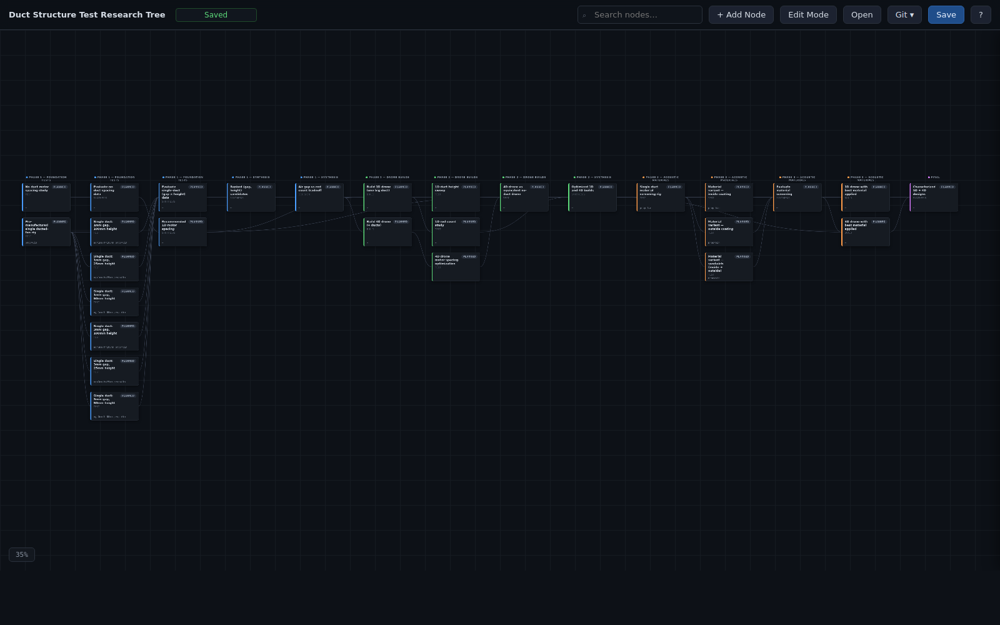
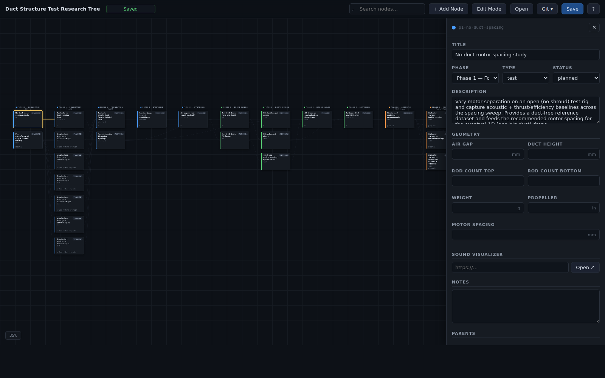
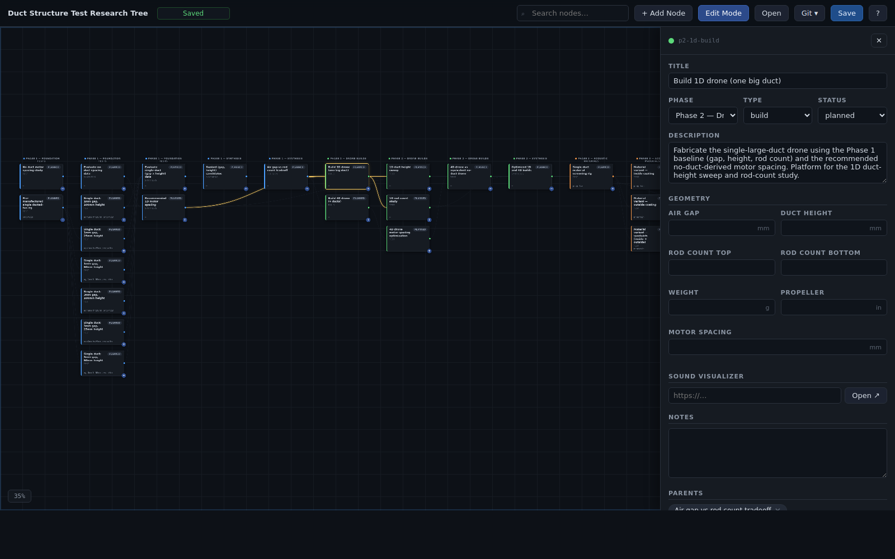
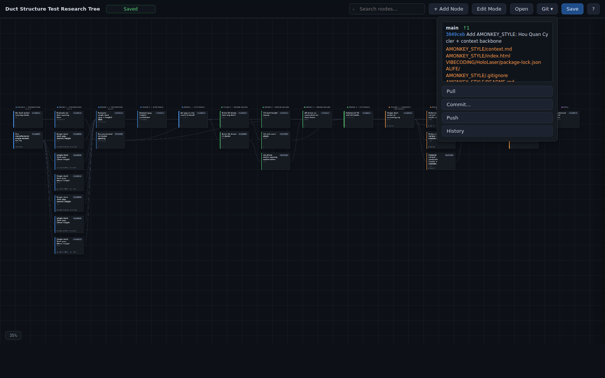
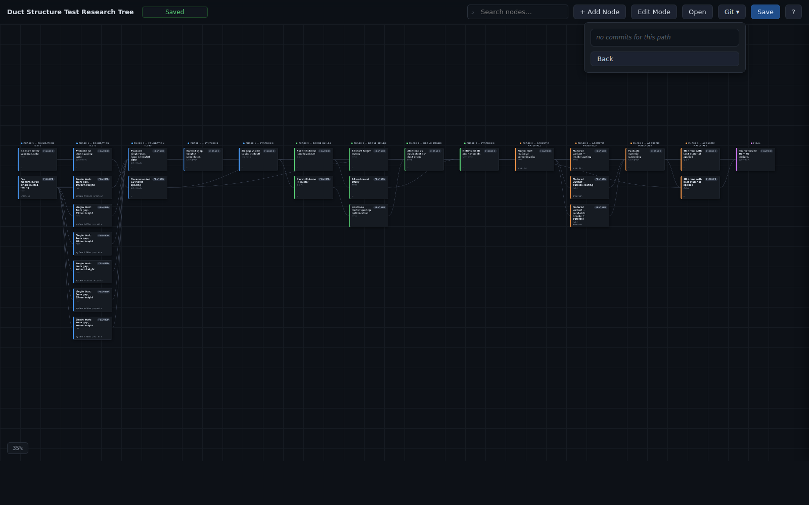
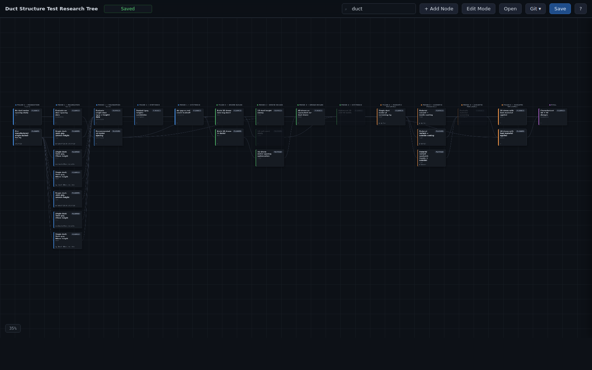
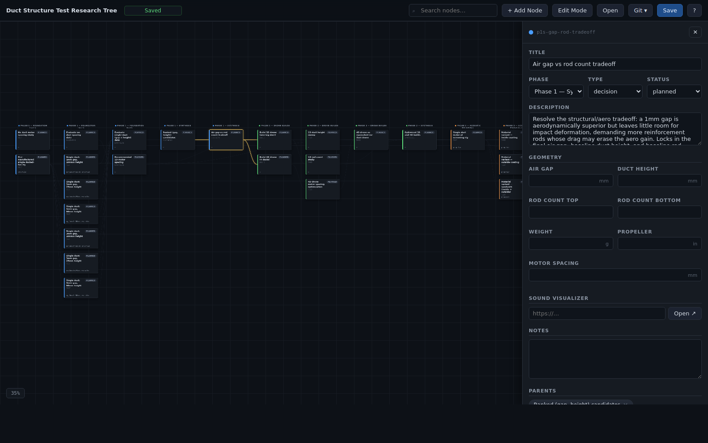
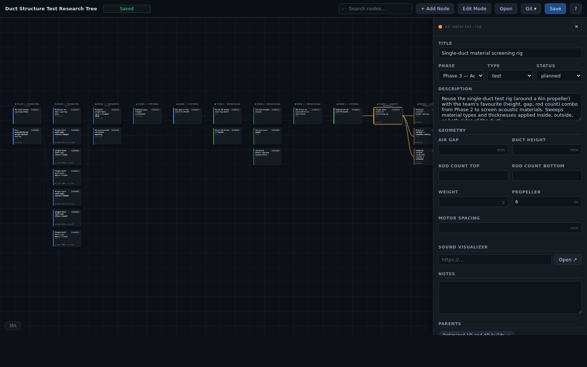

User Manual — Shroud Comparison · Duct Structure Test Program
Version 2026-06-08 · single-file HTML editor + git-backed JSON
This document explains how to view, edit, and version-control the research tree that organises the Shroud Comparison test program. The audience is anyone joining the team mid-flight: no prior knowledge of the codebase is assumed. Read it once end-to-end (about twenty minutes); refer back to specific sections as needed.

The research tree is a directed acyclic graph (DAG) that models the duct/shroud test program as a series of dependent steps. Each node is one experiment, one build, one synthesis, or one decision. Edges go left to right and express this node depends on that one.
Nodes carry only the metadata needed to plan and identify a test: phase, title, description, status, geometry (air gap, duct height, rod counts, weight, propeller size, motor spacing), notes, and a sound-visualizer link. The bulky data — far-field acoustic spectra, thrust curves, efficiency tables — lives in the separate sound visualizer project; this tree only points at it.
Durable history is provided by git. The single file data.json is the
source of truth; every meaningful change should be committed. The editor's
Git dropdown is just a friendly front-end over the real
repository.
From a terminal, launch the editor with the project launcher:
research_tree -duct
This starts a tiny Python server on http://127.0.0.1:8123 and opens
your default browser at that address. The server is bound to localhost only — it
is not reachable from the network. The browser tab is the editor.
PATH, you
can run the server directly:
cd /home/adam/ŻYCIE/PRACA/Shroud_Comparison/research_tree
python3 serve.py --port 8123http://127.0.0.1:8123/.
| Command | Effect |
|---|---|
| research_tree -duct | Start (or reuse) the server and open the browser. |
| research_tree -duct --stop | Stop the running server for this tree. |
| research_tree --list | List all registered trees, ports, and running state. |
You can also just open index.html in a browser via the
file:// protocol — fine for read-only viewing, but the git buttons
will be disabled because there's no server backing them.
Every node on the canvas is a card of fixed size (220×130 px in CSS).
Seven visible elements carry the meaning. The diagram below shows them on a
scaled-up mockup of node p1-ag1-h50:
PLANNED, IN-PROGRESS, DONE, or BLOCKED.test, build, synthesis, decision. Set in the side panel.ag=1mm h=50mm rods=t+b w=…g.Click any node on the canvas. A side panel slides in from the right with all the editable fields. Every field saves immediately into the in-memory state; the toolbar Saved / Unsaved pill turns yellow as soon as you change anything.

p1-no-duct-spacing — a node with no geometry filled. Every geometry field is independently nullable.| Field | Meaning |
|---|---|
| Title | Short human label, used on the card and in search. |
| Phase | Drop-down. Determines the color stripe and the column header. |
| Type | test · build · synthesis · decision. |
| Status | planned · in-progress · done · blocked. |
| Description | 1–3 sentences describing what the node represents. |
| Air gap (mm) | Tip-to-shroud air gap for the duct. |
| Duct height (mm) | Axial duct length. |
| Rod count top / bottom | Reinforcement rods on each side. |
| Weight (g) | Mass of the test article. |
| Propeller (in) | Propeller diameter in inches. |
| Motor spacing (mm) | Inter-motor distance for multi-motor builds. |
| Sound visualizer | URL pasted in from the separate sound visualizer tool. Click Open to deep-link out. |
| Notes | Free-form free-text scratchpad. |
| Parents | Chips listing this node's parents. Use the combobox to add more; click the × to remove. |
| Children | Read-only list of dependent nodes. |
null. That is expected
for fields that don't apply to a particular node — for example a synthesis node
has no air gap of its own. The geometry summary line on the card simply omits
the null fields.
The bottom of the side panel has Duplicate and
Delete buttons. Duplicate copies the node (new id, same parents,
same geometry) and selects it. Delete asks for confirmation and removes both the
node and any references to it from other nodes' parents lists.
Most edits happen in Edit Mode. Click Edit Mode in the toolbar (or press the button at the top right) — the button highlights and the cards grow handles.

In Edit Mode, drag a card vertically within its column to change its row order. Across-column moves are determined automatically by the parent links — depth = 1 + max depth of parents, so dragging horizontally has no effect.
| Keys | Action |
|---|---|
| Ctrl/Cmd + F | Focus search box |
| Ctrl/Cmd + S | Save data.json |
| Esc | Close side panel / context menu / help overlay |
| Delete | Delete the selected node (with confirmation) |
There are three save paths depending on how you opened the editor. The toolbar pill Saved turns into Unsaved the moment any field changes; saving turns it back to Saved.
| Mode | What Save does |
|---|---|
Over http://(launcher or python3 serve.py) |
Posts the JSON to the server, which writes data.json in place. No dialog, no permissions, no friction. This is the recommended path. |
Over file:// in Chromium (File System Access API) |
The first save asks you to confirm a write back to data.json. From then on it writes silently to the same file. |
Over file:// in Firefox / Safari |
The File System Access API is unavailable, so Save downloads data.json to your Downloads folder. You then have to copy it back into the research_tree directory by hand. Awkward — use the launcher instead. |
The Git ▾ button in the toolbar is enabled only when you opened
the editor over http:// (i.e. via the launcher or
serve.py). On file:// the button is disabled.


data.json.| Button | What it does |
|---|---|
| Pull | Runs git pull; on success the editor re-fetches data.json so the canvas matches the new HEAD. If you have unsaved local changes, you'll be asked first — pulling discards them. |
| Commit… | Opens a one-line message box. Staging is automatic: only data.json is added. Hit Enter to commit, Esc to cancel. |
| Push | Runs git push. Errors (auth, conflict) surface as a toast. |
| History | Shows the last 20 commits that touched this data.json. Back returns to the status view. |
git log. You can also run it from a
terminal: git log -p PRACA/Shroud_Comparison/research_tree/data.json.
The per-edit history is intentionally not squashed — that history is the
research log.
Use a tree: prefix and describe what changed in a few words.
tree: fill ag1×h50 acoustic results
tree: split p2-1d-rod-count into 2/4/6/8 sub-runs
tree: mark p1-eval-no-duct as doneType any word into the search box (or press Ctrl+F). Nodes whose title or description contains the term remain bright; the rest are dimmed. The connections stay visible so you can still see the surrounding structure. Press Esc while the search input is focused — or simply delete the term — to clear the filter.

duct. Matches stay bright, non-matches fade.Suppose you have just finished bench-testing the single-duct rig with a 1 mm air gap and a 50 mm duct height. Acoustic + thrust numbers live in the sound visualizer; you want to capture the geometry & status here and commit.
research_tree -duct. The browser opens.1 and 50). Type the measured Weight in grams.planned to done.tree: ag1×h50 results from 2026-06-08| id | Title | color |
|---|---|---|
| phase1 | Phase 1 — Foundation Tests | #4a9eff (blue) |
| phase1_synth | Phase 1 — Synthesis | #4a9eff (blue) |
| phase2 | Phase 2 — Drone Builds | #5cd97a (green) |
| phase2_synth | Phase 2 — Synthesis | #5cd97a (green) |
| phase3 | Phase 3 — Acoustic Materials | #ff9c4a (orange) |
| final | Final | #d97aff (purple) |
| type | Meaning |
|---|---|
| test | A physical experiment on a rig or drone. Geometry fields usually filled. |
| build | A fabrication step — assembling a 1D or 4D drone or sub-assembly. |
| synthesis | Aggregation/evaluation node. Combines several test outputs into a recommendation. |
| decision | Branch point: the team chooses a configuration that locks downstream nodes. |
| status | Meaning |
|---|---|
| planned | On the roadmap, not started. |
| in-progress | Active work. |
| done | Complete; results captured (link & notes filled). |
| blocked | Cannot proceed until something upstream resolves. |

p1s-gap-rod-tradeoff) — Phase 1 air-gap vs rod-count tradeoff.
The research_tree bash launcher uses a heredoc table called
TREES to map a flag (like -duct) to a directory + port.
To register a second tree:
/home/adam/ŻYCIE/PRACA/SomeProject/research_tree/index.html, serve.py and a starter data.json into it. The schema must match (see Section 13).research_tree launcher, find the TREES heredoc, and append one row:-myproj /home/adam/ŻYCIE/PRACA/SomeProject/research_tree 8125research_tree --list. Then research_tree -myproj opens the new tree.
Each tree's serve.py is fully self-contained: it resolves the
enclosing git repository on startup and exposes /api/git/* rooted
there. So the same launcher pattern works for any tree whose
data.json sits in a git repo.
| Symptom | Fix |
|---|---|
| Git buttons are disabled / greyed out. | You opened the editor via file://. The git endpoints only exist over http://. Close the tab and run research_tree -duct (or python3 serve.py) instead. |
| Browser opens twice when I run the launcher. | Used to happen on first start + reload; doesn't anymore — the launcher only opens a browser when it actually starts a new server. If you still see this, an older copy of the launcher is on your PATH. |
| Save downloaded the file instead of saving in place. | You're on Firefox/Safari over file://. The File System Access API isn't available there. Use the launcher (server mode) or switch to Chromium. |
| Pull failed with a merge conflict. | The server refuses to auto-resolve. Drop to a terminal in the repo, run git status, resolve manually (most often by accepting one side of data.json), then commit. |
| Long node titles are getting cut off. | Not anymore — titles wrap fully inside the 220×130 card. If you see ellipsis, hard-refresh the page (Ctrl+Shift+R) to pull the latest index.html. |
| The canvas is empty after launch. | The fetch for data.json failed. Check the browser console; usually it means the file is malformed or missing. Restore from git: git checkout -- data.json. |
| Adding a parent says "would create a cycle". | The DAG invariant is enforced. Either the target node is already a descendant, or you've picked the wrong direction. Cancel and try the inverse link. |
The on-disk data.json shape (must stay stable — both the editor and any future tooling depend on it):
{
"title": "Duct Structure Test Research Tree",
"phases": [
{"id": "phase1", "title": "Phase 1 — Foundation Tests", "color": "#4a9eff"},
{"id": "phase1_synth", "title": "Phase 1 — Synthesis", "color": "#4a9eff"},
{"id": "phase2", "title": "Phase 2 — Drone Builds", "color": "#5cd97a"},
{"id": "phase2_synth", "title": "Phase 2 — Synthesis", "color": "#5cd97a"},
{"id": "phase3", "title": "Phase 3 — Acoustic Materials", "color": "#ff9c4a"},
{"id": "final", "title": "Final", "color": "#d97aff"}
],
"nodes": [
{
"id": "kebab-slug",
"phaseId": "phase1",
"title": "Short title",
"description": "1–3 sentences.",
"type": "test | build | synthesis | decision",
"status": "planned | in-progress | done | blocked",
"parents": ["other-id"],
"geometry": {
"airGapMm": null, "ductHeightMm": null,
"rodCountTop": null, "rodCountBottom": null,
"weightG": null, "propellerInches": null, "motorSpacingMm": null
},
"soundVisualizerLink": "",
"notes": ""
}
]
}
Rules
parents references IDs only (no orphans).null for N/A)."planned" with empty soundVisualizerLink and notes.parents — the editor refuses to create one.| Keys | Action | Where |
|---|---|---|
| Ctrl/Cmd+S | Save data.json | Anywhere |
| Ctrl/Cmd+F | Focus the search box | Anywhere |
| Esc | Close side panel | When side panel is open |
| Esc | Close context menu | When right-click menu is open |
| Esc | Close Help overlay | When Help is open |
| Esc | Cancel commit form | In the commit prompt |
| Delete / Backspace | Delete the selected node (with confirm) | Selection on canvas, not in an input |
| Enter | Submit commit message | In the commit prompt |
| Click node | Select & open side panel | Canvas |
| Drag empty | Pan the canvas | Canvas background |
| Wheel | Zoom (anchored on cursor) | Canvas |
| Right-click node | Context menu: Duplicate, Add child, Delete | Canvas |
| Double-click empty | Create node here | Canvas (Edit Mode only) |
| Drag node | Reorder within column | Canvas (Edit Mode only) |
| Drag right-edge dot | Link this node as parent of the target | Canvas (Edit Mode only) |
| hash | Effect |
|---|---|
| #node=<id> | Select that node and open the side panel. |
| #edit | Enable Edit Mode. |
| #git | Open the Git dropdown panel (server mode only). |
| #git=history | Open Git panel and switch to History view. |
| #help | Open the Help overlay. |
| #search=<text> | Pre-fill the search box and apply the filter. |
Hooks combine with &, e.g.
#node=p1-ag1-h50&edit. hashchange events
re-apply the state without a reload.